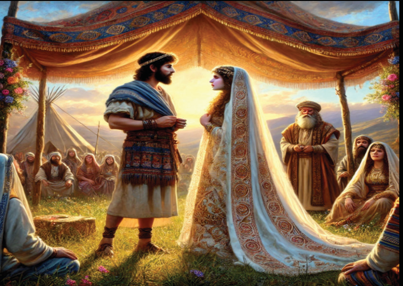

place and I did not know it.” He named the place Bethel; the place was formerly called Luz. “Bethel” means house of God.
In God’s plan, Jacob and his sons would become the ladder to link heaven and earth, to create the bridge between God and human beings, this was fulfilled through Jesus Christ.
Jacob’s marriage
Jacob went on his journey and came to the land of the people of the east. There, he stayed with his uncle, Laban. Laban had two daughters: Leah, the elder one, and Rachel, the younger one. Jacob loved Rachel for she was very graceful and beautiful. Laban had agreed to give his younger daughter Rachel in marriage to Jacob if he served his uncle Laban for seven years. After 7 years of service, Jacob was deceived, and therefore forced to marry Leah with her house cleaner Zilpah who was also not his choice. Then, Jacob said to Laban, “What is this you have done to me? Did I not serve you for Rachel? Why then have you deceived me? Figure 4.10 depicts Jacob's marriage.

After a week of marriage, he was given his choice, Rachel, with her house cleaner Bilhah. At last, Jacob got two wives and their two maidservants who both bore him children.
The danger of forced marriage
In forced marriage one partner or both of them marry without their free consent or against their will. The marriage may consequently lead to negative repercussions in one’s life. As such, forced marriage leads girls to poverty and powerlessness. In addition, it may cause mistreatment related to sexual abuse and forced sexual relations. Apart from that